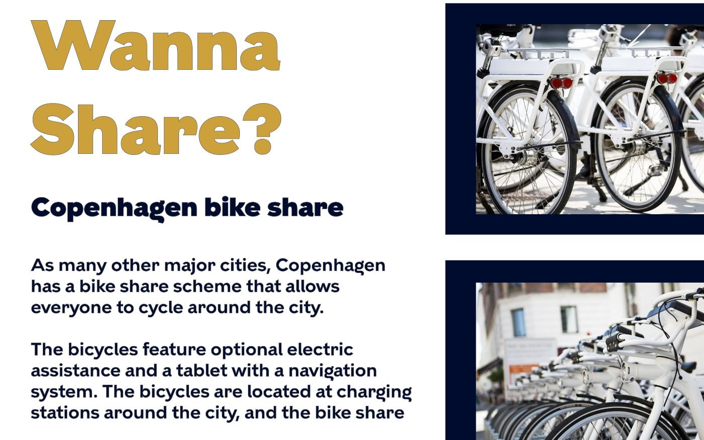
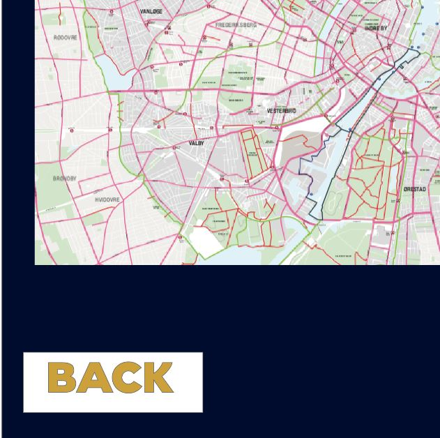

The prototype making process was already well known topic for all of us at this point, we did so many projects with prototypes that it was easy to make it.
Yet it was still very heplful. The same as with Story board, it was much easier to come up with one solution when prototyping, as well as see how to over all webiste would look. We asked our classmates for some reviews and fixed some things that were yet to be fixed.
We also changed the colors of the background and the back button, which was "too big"
I also learned how to change one color to another in Photoshop, by selecting the area and lowering saturation and adding different colors to the saturation.

